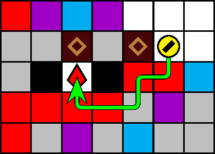

一般指針
定跡・上吸引

指針
直上のザクロは上吸引します．
解説
犬は，上入力の後に吸引すると，直上のオブジェクトを吸引できます．これにより，落下予定のブロックを落下する前に破壊したり，直上のザクロを落下する前に取得したりできます．特に，落下予定のザクロの落下を待つのは極めて迂遠なので，直上のザクロに対する上吸引は強く推奨されます．また，上吸引によるザクロの取得を念頭に置いた経路の策定も有効となる場合が多いです．図 3.3.2.1 は，ザクロを上吸引によって取得する経路の例です．
ブロックの上吸引によって，犬の上方の安定を確保することもできます．
注意: 塊はすべて，上吸引によらずに（側面または直上からの吸引によって）破壊します．落下予定の塊を 5 回の上吸引で破壊すると，落下猶予に間に合わず，圧迫される恐れがあります．
次の吸引で破壊できるブロック（有色石または 4 回吸引された塊）が落下してきたとき，タイミングよく上吸引するとパリィできます．詳細は「パリィ」を参照してください．